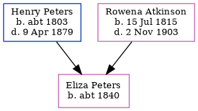

Eliza A Peters c1840 -
[ Home ] | [ Calendar ] | [ Surnames Index ] | [ Family History ]The child of Henry Peters and Rowena AtkinsonEliza Peters, the second cousin three-times-removed on the father's side of Nigel Horne, was born in New Brunswick, Canada c. 18401,2.
Throughout her life, she lived in Richibucto, Kent, New Brunswick in 18611.
Parents
- Henry Warman was born c. 1803
- Rowena Noble Charlotte was born on Jul 15, 1815
Citations
- 1861 Census of Canada Ancestry.com Operations Inc (Relation to Head of House: Daughter)
- Canada Census 1861 - Findmypast (was the daughter of the head of the household)
Family Tree
Generated by ged2site. Last updated on Nov 13, 2024